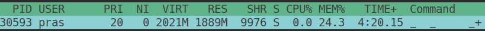
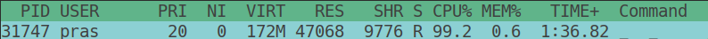

TL;DR: Convert the generator into list, if and only if the dataset is small, else consume on demand or rethink your design.
Python has a special function called Generators which yields value as we request from it rather than dumping everything into the memory at once. For example think about huge dataset like a list of lakh or crore number of elements. This is where generators comes in. Instead of creating all the elements at once and occupying system's memory, generators generate the values required as we request from it a.k.a lazy iterator.
Recently I came across a code like this.
from netaddr import IPNetwork
cidr = '10.0.0.0/8'
subnet_length = 32
network = IPNetwork('10.0.0.0/8')
ip_addresses = list(network.subnet(subnet_length))
no_of_hosts = len(ip_addresses)
netaddr is a python library which helps developers to play around with network addresses. In the above snippet, a class A network with network length of 8 and a subnet length of 32 is provided. The intention of the developer is to have all possible ip addresses for the given IP address class and subnet length. If you know how to calculate the total number of possible hosts or ip addresses for a given subnet, then you will arrive at the value of 16777216. This is the number of ip addresses that is possible for the given subnet.
Clearly, the authors of netaddr understood that sometimes such a huge number of hosts might be possible and hence network.subnet() function is a generator function. The issue here is converting it into a list at once. It defeats the purpose of having a generator at all. By calling list(network.subnet(subnet_length)) the program tries to dump all the values of the generator at once to convert it into a list, which in this case is going to both CPU and memory intensive.

If the intention is just to calculate the total number of possible hosts for a given subnet and IP class range, then the above is memory expensive operation as it first prepares a list of all possible addresses and then counting the length of that list. This is clear from the above screenshot of the htop utility which I used to measure the amount of memory the program used for doing that. 24% of memory was used to achive that and the CPU was of-course at 100% (the screenshot was taken after the list was prepared hence 0).
Instead, the following method can be used to minimize the memory usage.
no_of_hosts = 0
for _ in network.subnet(32):
no_of_hosts += 1
The maximum amount of memory used for this approach is only 0.6%, of-course the CPU usage remains at 100% since the program needs to produce the intended value from generator for such huge range. We just don't hold those values anywhere in our program, hence memory is not occupied for all the generated value.

Even a far more better approach for calculating total number of hosts would be to use the formula which is just a quick arithmetic operation.
2**(network_length - subnet_length) - 2
This solution works if the programmers intention is just to count the number of possible hosts or length of the total values produced by the generator, else if they need to have list the list of ip addresses for other purposes, they can be consumed on the fly for a given number like how the frontend makes use of pagination to display large number of records.
generators have this method called send(arg) for which accepts one argument. We can make use of for loop with range method to get ip addresses in batches.
def get_ten_addresses(subnet_generator):
return [subnet.send(None) for _ in range(1, 11)]
subnet = network.subnet(32)
ten_addresses = get_ten_addresses(subnet)
next_ten_addresses = get_ten_addresses(subnet)
generators know where they left and where to pick up next, so ten_addresses will be a list of first 10 addresses generated by the generator and next_ten_addresses will be as the name suggests is a list of next 10 addresses. How do we know if we have consumed all the elements of the generator? Generators will raise StopIteration exception to denote that.
If the solution depends on the entire list of values to be available, probably we need to rethink the design to store such datasets into some other disk (or) file based containers like RDBMS and retrieve it from there.